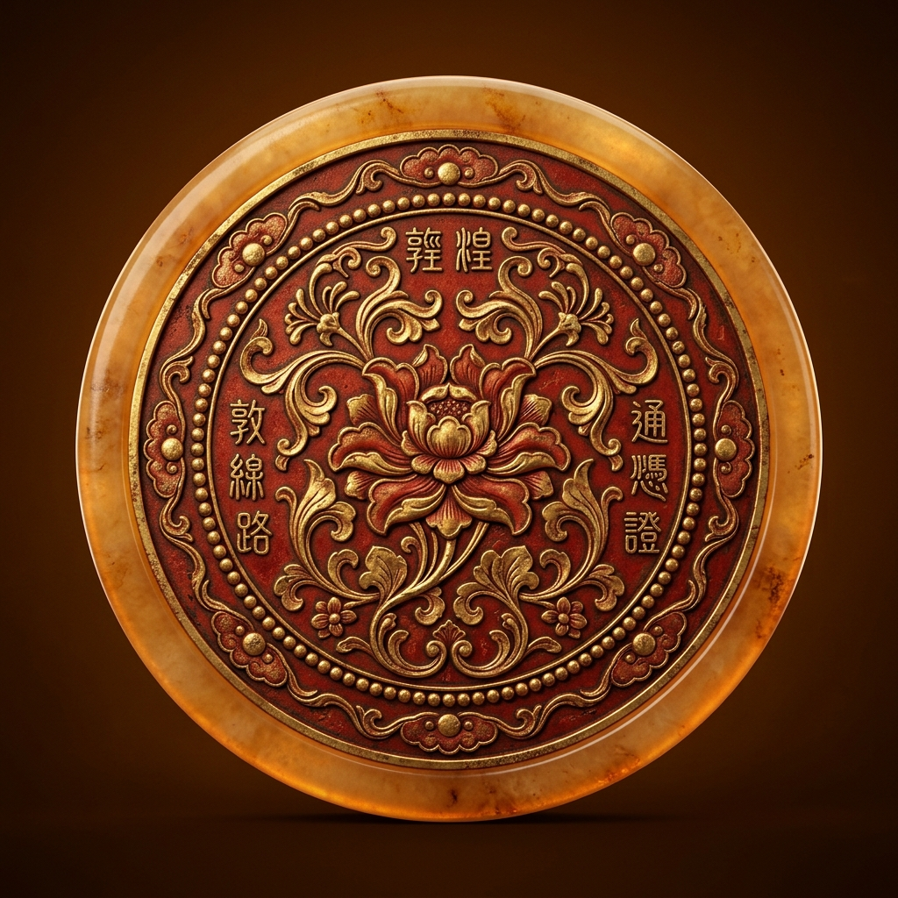

🚩 全队丝路行程进展
已打卡 0 / 9 天
9 天
行程周期
~2800 km
自驾总里程
3 省
甘·蒙·青
全部行程
D0 济南✈兰州
D1 兰州→张掖
D2 丹霞·金塔胡杨
D3 嘉峪关·瓜州
D4 阳关·鸣沙山
D5 莫高窟·敦煌
D6 翡翠湖→德令哈
D7 茶卡·青海湖
D8 塔尔寺✈济南
丝路自驾全程轨迹总览
包含连霍高速G30、柴达木大穿越
✨
📍
🛰️
环线景点门票速查与军人优待手册
🎟️ 全程景点已出票进度
已购 0 / 11 处 (0%)
🎖️ 现役与退役军人优待作战指南
收起 ▴
✓ 免首道大门票
持本人《现役军官证/士兵证》或《退役军人优待证》+ 二代身份证原件，在张掖七彩丹霞、金塔胡杨林、嘉峪关、鸣沙山、翡翠湖、茶卡盐湖、青海湖二郎剑均享免大门票（单人累计可减免超 600 元）。
⚠️ 免大门票 ≠ 免特许交通车
景区特许经营的内部交通车、小火车、摆渡车（七彩丹霞39元、金塔胡杨观光车20元、翡翠湖60元、茶卡100元）不属于免票范围，军人队员需自行购票乘车。
💡 购票建议：普通队员在美团/飞猪直接买“门票+车票”联票；军人队员在平台提前单独购买车票或到景区凭证办优待。
行前行李必备清单（支持打勾保存）
🪪 证件与贵重物资
🧥 穿戴与户外装备
💊 医疗与护肤防燥
考斯特团队公共 AA 记账器
团队公共总支出
¥ 0.00
同行分摊：
-
10
人
+
当前人均应付：¥ 0.00